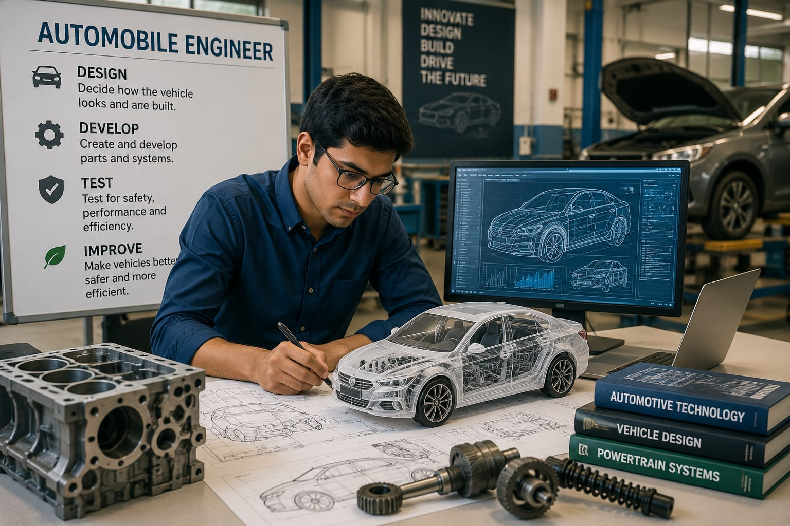

- Every day, we use cars, buses, and motorcycles to travel.
- Someone has to decide how these vehicles should look and how they should be built.
- That person is called an Automobile Engineer.
- They design vehicle parts and make sure vehicles are safe and efficient.
- 👉 In simple words: Automobile Engineers design and improve the vehicles we use every day.
Automobile Engineer
🧑🎨 What Do They Do?

🎓 How to Become an Automobile Engineer
These diploma courses help students learn vehicle design, automobile systems, engines, manufacturing, and maintenance technologies.
Diploma in Automobile Engineering
Duration: 3 Years
Eligibility: 10th Pass with Science and Mathematics (Minimum 35%–50% marks)
Entrance Exam: State Polytechnic Entrance Exams
Diploma in Mechanical Engineering
Duration: 3 Years
Eligibility: 10th Pass with Science and Mathematics (Minimum 35%–50% marks)
Entrance Exam: State Polytechnic Entrance Exams
Note: Many Automobile Engineers begin with diploma programs in Automobile or Mechanical Engineering and later specialize in vehicle design, automotive systems, manufacturing, testing, and electric vehicle technologies.
These undergraduate programs help students learn vehicle design, automotive systems, engine technology, manufacturing, testing, and electric vehicle engineering.
B.Tech / B.E. in Automobile Engineering
Duration: 4 Years
Eligibility: 10+2 with Physics, Chemistry, and Mathematics (PCM) (Minimum 50%–60% aggregate)
Entrance Exam: JEE Main / JEE Advanced / State Engineering Entrance Exams / University Entrance Exams
B.Tech / B.E. in Mechanical Engineering
Duration: 4 Years
Eligibility: 10+2 with Physics, Chemistry, and Mathematics (PCM) (Minimum 50%–60% aggregate)
Entrance Exam: JEE Main / JEE Advanced / State Engineering Entrance Exams / University Entrance Exams
📝 Exam Details
(Click on the exam name to see full details)
JEE Main JEE Advanced State Engineering Entrance Exams University Entrance ExamsNote: Most Automobile Engineers pursue Automobile or Mechanical Engineering and later specialize in vehicle design, powertrain systems, manufacturing, motorsports, or electric vehicle (EV) technologies.
These lateral entry programs allow diploma holders to directly enter the second year of engineering and specialize in vehicle design, automotive systems, manufacturing, and testing.
B.Tech Lateral Entry in Automobile Engineering
Duration: 3 Years (Direct admission into 2nd year)
Eligibility: 3-Year Engineering Diploma in a relevant stream (Minimum 45%–50% marks)
Entrance Exam: State Lateral Entry Entrance Tests (LET)
B.Tech Lateral Entry in Mechanical Engineering
Duration: 3 Years (Direct admission into 2nd year)
Eligibility: 3-Year Engineering Diploma in a relevant stream (Minimum 45%–50% marks)
Entrance Exam: State Lateral Entry Entrance Tests (LET)
Note: Diploma holders in Automobile, Mechanical, Production, or related engineering branches can enter the second year of B.Tech/B.E. through lateral entry and continue toward careers in automobile design, manufacturing, testing, and electric vehicle technologies.
These postgraduate programs help engineers specialize in advanced vehicle design, automotive research, electric vehicle technologies, manufacturing systems, and mobility innovation.
M.Tech / M.E. in Automobile Engineering
Duration: 2 Years
Eligibility: B.E. / B.Tech in Mechanical, Automobile, Production, or Manufacturing Engineering (Minimum 50%–60% aggregate)
Entrance Exam: GATE / University Entrance Exams
M.Tech / M.E. in Electric Vehicle (EV) Technology
Duration: 2 Years
Eligibility: B.E. / B.Tech in Mechanical, Electrical, Electronics, or Automobile Engineering (Minimum 50%–60% aggregate)
Entrance Exam: GATE / University Entrance Exams
Note: Postgraduate studies help Automobile Engineers specialize in vehicle design, electric mobility, autonomous vehicles, automotive research, advanced manufacturing, and leadership roles in the automotive industry.
Note:
(Age limits, marks, and admission process may vary depending on the college or state. These courses are available in many colleges and universities across India. You can choose colleges based on your location, budget, and entrance exams.)
🏛️ Top Colleges for Automobile Engineering
(Tap on a college to view the details)
After 10th Pass (Diploma Programs)
PSG Polytechnic College, Coimbatore Government Polytechnic College, Kalamassery Government Polytechnic College, Pune Agnel Polytechnic, Mumbai Institute of Engineering and Rural Technology (IERT), PrayagrajAfter 12th Pass (Bachelor's Degrees)
Indian Institute of Technology (IIT) Delhi, New Delhi Delhi Technological University (DTU), New Delhi PSG College of Technology, Coimbatore Vellore Institute of Technology (VIT), Vellore Manipal Institute of Technology (MIT), Manipal SRM Institute of Science and Technology, Chennai Chandigarh University, MohaliAfter Diploma (Lateral Entry)
Anna University (MIT Campus), Chennai Jadavpur University, Kolkata COEP Technological University, Pune Amity University, NoidaAfter Graduation (Master's Degrees & Research)
Indian Institute of Technology (IIT) Madras, Chennai Indian Institute of Technology (IIT) Roorkee, Roorkee Birla Institute of Technology and Science (BITS), Pilani National Institute of Technology (NIT), Warangal Defence Institute of Advanced Technology (DIAT), PuneSTEP 1
Imagine you are working as an Automobile Engineer.
STEP 2
Your team is designing a new car.
STEP 3
You help design the car and its parts.
STEP 4
You test the car to make sure it is safe and efficient.
STEP 5
The car you designed is manufactured and used by people every day.
STEP 6
If you enjoy vehicles, technology, and solving problems, this career may be right for you.
Where do Automobile Engineers work? (Job Roles + Growth)
These are some roles you can explore in Automobile Engineering.
You usually start with beginner roles and grow with experience.
🟢 Beginner Roles
🔧
Junior Automotive Technician
(After Diploma)
Handles vehicle servicing and basic repairs.
📋
Graduate Engineer Trainee (GET)
(After B.Tech)
Assists engineers in vehicle testing and design projects.
🔵 Mid-Level Roles
🚗
Automobile Engineer
(After B.Tech + Experience)
Designs and improves vehicles and their systems.
🔋
EV Powertrain Engineer
(After B.Tech EV Specialization + Experience)
Develops electric vehicle batteries and motors.
🟣 Advanced Roles
🧪
R&D Project Manager
(After M.Tech / Advanced Specialization)
Leads vehicle research and development projects.
🏭
VP of Automotive Engineering
(After Executive Program + Experience)
Leads automotive engineering teams and innovation.
🚗
Automobile Manufacturing Companies
Design and develop cars, bikes, trucks, and commercial vehicles.
🔋
Electric Vehicle (EV) Companies
Develop electric vehicles, batteries, and charging technologies.
🏎️
Motorsports Companies
Design high-performance vehicles and racing technologies.
⚙️
Automotive Component Companies
Design engines, brakes, transmissions, and vehicle components.
🧪
Research & Development Centers
Create safer, smarter, and more efficient vehicle technologies.
🌍
Global Automotive Companies
Work on vehicle projects and innovations around the world.
(Click Yes or No for each question)
1. Have you ever wondered who designs the cars and bikes we use every day?
2. Do you like to learn how cars and bikes work?
3. Would you like to know how cars are made?
4. Have you ever wondered who designs the engines, brakes, and other parts inside a car?
5. Imagine a company is designing a new car. Your job is to design the car, test its safety, and improve its performance. The car you helped create will be used by people every day. Does this sound exciting to you?